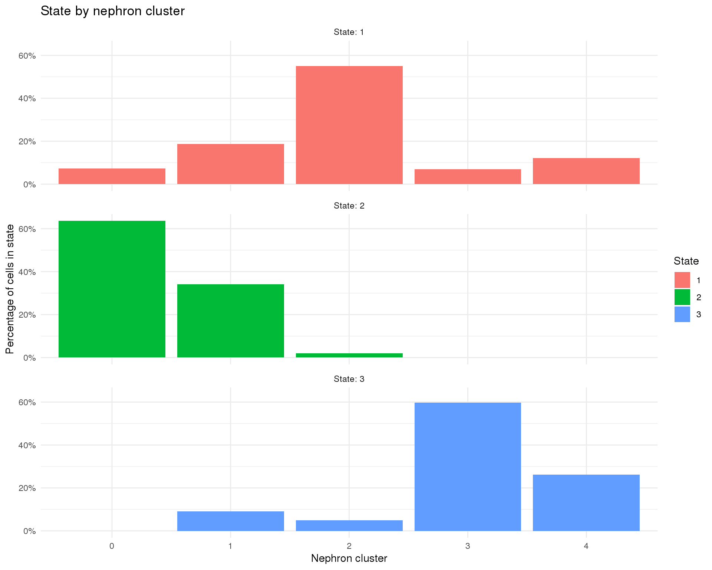

Organoids Nephron Trajectory Analysis
Last updated: 2018-09-13
workflowr checks: (Click a bullet for more information)-
✔ R Markdown file: up-to-date
Great! Since the R Markdown file has been committed to the Git repository, you know the exact version of the code that produced these results.
-
✔ Environment: empty
Great job! The global environment was empty. Objects defined in the global environment can affect the analysis in your R Markdown file in unknown ways. For reproduciblity it’s best to always run the code in an empty environment.
-
✔ Seed:
set.seed(20180730)The command
set.seed(20180730)was run prior to running the code in the R Markdown file. Setting a seed ensures that any results that rely on randomness, e.g. subsampling or permutations, are reproducible. -
✔ Session information: recorded
Great job! Recording the operating system, R version, and package versions is critical for reproducibility.
-
Great! You are using Git for version control. Tracking code development and connecting the code version to the results is critical for reproducibility. The version displayed above was the version of the Git repository at the time these results were generated.✔ Repository version: ad10b21
Note that you need to be careful to ensure that all relevant files for the analysis have been committed to Git prior to generating the results (you can usewflow_publishorwflow_git_commit). workflowr only checks the R Markdown file, but you know if there are other scripts or data files that it depends on. Below is the status of the Git repository when the results were generated:
Note that any generated files, e.g. HTML, png, CSS, etc., are not included in this status report because it is ok for generated content to have uncommitted changes.Ignored files: Ignored: .Rhistory Ignored: .Rproj.user/ Ignored: analysis/cache/ Ignored: data/processed.bak/ Ignored: packrat/lib-R/ Ignored: packrat/lib-ext/ Ignored: packrat/lib/ Ignored: packrat/src/ Untracked files: Untracked: analysis/cache.bak/ Unstaged changes: Modified: analysis/99_Methods.Rmd Staged changes: Deleted: output/README.md
Expand here to see past versions:
# scRNA-seq
library("Seurat")
library("monocle")
# Plotting
library("viridis")
# Presentation
library("glue")
library("knitr")
# Parallel
# Paths
library("here")
# Output
library("jsonlite")
# Tidyverse
library("tidyverse")source(here("R/output.R"))orgs.neph.path <- here("data/processed/Organoids_nephron.Rds")Introduction
In this document we are going to take the results of reclustering the nephron lineage in the organoids datasets and perform pseudotime trajectory analysis using Monocle. This should tell us more about how those clusters relate to each other and what is happening during the developmental process.
if (file.exists(orgs.neph.path)) {
orgs.neph <- read_rds(orgs.neph.path)
} else {
stop("Clustered Organoids nephron dataset is missing. ",
"Please run '04B_Organoids_Nephron.Rmd' first.",
call. = FALSE)
}
orgs.neph.cds <- importCDS(orgs.neph)
orgs.neph.cds <- estimateSizeFactors(orgs.neph.cds)Gene selection
We first need to select a set of genes to use for this analyis. As we have already identified marker genes for each cluster it makes sense to use those. We will use the top 100 conserved marker genes for each cluster with the greatest absolute foldchanges.
con.markers <- read_csv(here("output/04B_Organoids_Nephron",
"conserved_markers.csv"))
ordering.genes <- con.markers %>%
group_by(cluster) %>%
arrange(-abs(mean_avg_logFC)) %>%
top_n(100, mean_avg_logFC) %>%
pull(gene) %>%
unique()
orgs.neph.cds <- setOrderingFilter(orgs.neph.cds, ordering.genes)
fData(orgs.neph.cds)$ExprsCells <- rowSums(as.matrix(exprs(orgs.neph.cds)) > 0)Taking the intersection of these sets gives us 455 selected genes.
Order cells
Monocle then uses the selected genes to perform dimensionality reduction using the DDRTree algorithm and then orders the cells along a trajectory.
orgs.neph.cds <- reduceDimension(orgs.neph.cds, max_components = 2,
method = "DDRTree")
orgs.neph.cds <- orderCells(orgs.neph.cds)
root.state <- 1
n.branch <- length(
orgs.neph.cds@auxOrderingData[[orgs.neph.cds@dim_reduce_type]]$branch_points
)
n.states <- length(unique(pData(orgs.neph.cds)$State))
orgs.neph.cds <- orderCells(orgs.neph.cds, root_state = root.state)Plot trajectory
color.bys <- c("State", "Pseudotime", "NephCluster", "Dataset")
src_list <- lapply(color.bys, function(color.by) {
src <- c("### {{color.by}} {.unnumbered}",
"```{r plot-trajectory-{{color.by}}}",
"plot_cell_trajectory(orgs.neph.cds, color_by = '{{color.by}}')",
"```",
"")
knit_expand(text = src)
})
out <- knit_child(text = unlist(src_list), options = list(cache = FALSE))State
plot_cell_trajectory(orgs.neph.cds, color_by = 'State')
Pseudotime
plot_cell_trajectory(orgs.neph.cds, color_by = 'Pseudotime')
NephCluster
plot_cell_trajectory(orgs.neph.cds, color_by = 'NephCluster')
Dataset
plot_cell_trajectory(orgs.neph.cds, color_by = 'Dataset')
Crossover
Monocle assigns each cell a “state” which corresponds to a segment of the tree. In this case Monocle has identified 1 branch points and 3 states. We have chosen state 1 to be the root state of our tree. Let’s look at how those states relate to our nephron clusters.
pData(orgs.neph.cds) %>%
count(State, NephCluster) %>%
complete(State, NephCluster, fill = list(n = 0)) %>%
group_by(State) %>%
mutate(Total = sum(n)) %>%
ggplot(aes(x = NephCluster, y = n / Total, fill = State)) +
geom_col() +
scale_y_continuous(labels = scales::percent) +
facet_wrap(~ State, ncol = 1, labeller = label_both) +
labs(title = "State by nephron cluster",
x = "Nephron cluster",
y = "Percentage of cells in state") +
theme_minimal()
Pseudotime genes
Heatmap
We can show the expression of genes along this pseudotime trajectory. Here is a heatmap showing a selection of interesting kidney organoid genes.
plot.genes <- c("PECAM1", "CDH5", "MEIS1", "PDGFRA", "HMGB2", "CENPA", "SIX1",
"DAPL1", "NPHS1", "PODXL", "S100A8", "TYROBP", "MAL", "EMX2",
"LRP2", "GATA3", "SLC12A1", "SPINT2", "TUBB2B", "STMN2",
"TTHY1", "HBA1", "HBG1")
is_present <- plot.genes %in% rownames(orgs.neph.cds)
is_exprs <- fData(orgs.neph.cds)[plot.genes[is_present], "ExprsCells"] > 10
plot.genes.use <- plot.genes[is_present][is_exprs]The following genes aren’t present in this dataset and will be skipped: TTHY1 and HBG1
The following genes aren’t expressed in at least 10 cells in this dataset and will be skipped: NA
plot_pseudotime_heatmap(orgs.neph.cds[plot.genes.use, ],
num_clusters = 3,
cores = 1,
show_rownames = TRUE,
hmcols = viridis(100))
Expression
We can also show the changes in expression of each gene individually.
src_list <- lapply(color.bys, function(color.by) {
src <- c("### {{color.by}} {.unnumbered}",
"```{r time-genes-exprs-{{color.by}}}",
"plot_genes_in_pseudotime(",
"orgs.neph.cds[plot.genes.use, ],",
"ncol = 2, color_by = '{{color.by}}')",
"```",
"")
knit_expand(text = src)
})
out <- knit_child(text = unlist(src_list), options = list(cache = FALSE))State
plot_genes_in_pseudotime(
orgs.neph.cds[plot.genes.use, ],
ncol = 2, color_by = 'State')
Pseudotime
plot_genes_in_pseudotime(
orgs.neph.cds[plot.genes.use, ],
ncol = 2, color_by = 'Pseudotime')
NephCluster
plot_genes_in_pseudotime(
orgs.neph.cds[plot.genes.use, ],
ncol = 2, color_by = 'NephCluster')
Dataset
plot_genes_in_pseudotime(
orgs.neph.cds[plot.genes.use, ],
ncol = 2, color_by = 'Dataset')
Branching genes
Monocle can identify branch points and it can be useful to examine how genes are expressed differentially along each branch.
Heatmap
In this heatmap the centre shows the branch point, one branch moves towards the left and the other towards the right.
Branch point 1
plot_genes_branched_heatmap(orgs.neph.cds[plot.genes.use, ],
branch_point = 1,
num_clusters = 3,
show_rownames = TRUE,
hmcols = viridis(100))
Expression
We can also look at how individual genes change from a branch point. Here the left is the branch point and the right is the end of each branch. Expression along a branch is shown by the two different lines.
Branch point 1
src_list <- lapply(color.bys, function(color.by) {
src <- c("#### {{color.by}} {.unnumbered}",
"```{r branch-genes-exprs-1-{{color.by}}}",
"plot_genes_branched_pseudotime(orgs.neph.cds[plot.genes.use, ],",
"branch_point = 1,",
"ncol = 2, color_by = '{{color.by}}')",
"```",
"")
knit_expand(text = src)
})
out <- knit_child(text = unlist(src_list), options = list(cache = FALSE))State
plot_genes_branched_pseudotime(orgs.neph.cds[plot.genes.use, ],
branch_point = 1,
ncol = 2, color_by = 'State')
Pseudotime
plot_genes_branched_pseudotime(orgs.neph.cds[plot.genes.use, ],
branch_point = 1,
ncol = 2, color_by = 'Pseudotime')
NephCluster
plot_genes_branched_pseudotime(orgs.neph.cds[plot.genes.use, ],
branch_point = 1,
ncol = 2, color_by = 'NephCluster')
Dataset
plot_genes_branched_pseudotime(orgs.neph.cds[plot.genes.use, ],
branch_point = 1,
ncol = 2, color_by = 'Dataset')
Summary
Parameters
This table describes parameters used and set in this document.
params <- toJSON(list(
list(
Parameter = "n.genes",
Value = length(ordering.genes),
Description = "Number of genes used for trajectory analysis"
),
list(
Parameter = "n.states",
Value = n.states,
Description = "Number of states identified by trajectory analysis"
),
list(
Parameter = "n.branch",
Value = n.branch,
Description = "Number of branch points identified by trajectory analysis"
),
list(
Parameter = "root.state",
Value = root.state,
Description = "State chosen as root of the tree"
)
), pretty = TRUE)
kable(fromJSON(params))| Parameter | Value | Description |
|---|---|---|
| n.genes | 455 | Number of genes used for trajectory analysis |
| n.states | 3 | Number of states identified by trajectory analysis |
| n.branch | 1 | Number of branch points identified by trajectory analysis |
| root.state | 1 | State chosen as root of the tree |
Output files
This table describes the output files produced by this document. Right click and Save Link As… to download the results.
write_rds(orgs.neph.cds, here("data/processed/Organoids_trajectory.Rds"))dir.create(here("output", DOCNAME), showWarnings = FALSE)
write_lines(params, here("output", DOCNAME, "parameters.json"))
kable(data.frame(
File = c(
glue("[parameters.json]({getDownloadURL('parameters.json', DOCNAME)})")
),
Description = c(
"Parameters set and used in this analysis"
)
))| File | Description |
|---|---|
| parameters.json | Parameters set and used in this analysis |
Session information
devtools::session_info() setting value
version R version 3.5.0 (2018-04-23)
system x86_64, linux-gnu
ui X11
language (EN)
collate en_US.UTF-8
tz Australia/Melbourne
date 2018-08-29
package * version date source
abind 1.4-5 2016-07-21 cran (@1.4-5)
acepack 1.4.1 2016-10-29 cran (@1.4.1)
ape 5.1 2018-04-04 cran (@5.1)
assertthat 0.2.0 2017-04-11 CRAN (R 3.5.0)
backports 1.1.2 2017-12-13 CRAN (R 3.5.0)
base * 3.5.0 2018-06-18 local
base64enc 0.1-3 2015-07-28 CRAN (R 3.5.0)
bibtex 0.4.2 2017-06-30 cran (@0.4.2)
bindr 0.1.1 2018-03-13 cran (@0.1.1)
bindrcpp * 0.2.2 2018-03-29 cran (@0.2.2)
Biobase * 2.40.0 2018-07-30 Bioconductor
BiocGenerics * 0.26.0 2018-07-30 Bioconductor
bitops 1.0-6 2013-08-17 cran (@1.0-6)
broom 0.5.0 2018-07-17 cran (@0.5.0)
caret 6.0-80 2018-05-26 cran (@6.0-80)
caTools 1.17.1.1 2018-07-20 cran (@1.17.1.)
cellranger 1.1.0 2016-07-27 CRAN (R 3.5.0)
checkmate 1.8.5 2017-10-24 cran (@1.8.5)
class 7.3-14 2015-08-30 CRAN (R 3.5.0)
cli 1.0.0 2017-11-05 CRAN (R 3.5.0)
cluster 2.0.7-1 2018-04-13 CRAN (R 3.5.0)
codetools 0.2-15 2016-10-05 CRAN (R 3.5.0)
colorspace 1.3-2 2016-12-14 cran (@1.3-2)
combinat 0.0-8 2012-10-29 CRAN (R 3.5.0)
compiler 3.5.0 2018-06-18 local
cowplot * 0.9.3 2018-07-15 cran (@0.9.3)
crayon 1.3.4 2017-09-16 CRAN (R 3.5.0)
CVST 0.2-2 2018-05-26 cran (@0.2-2)
data.table 1.11.4 2018-05-27 cran (@1.11.4)
datasets * 3.5.0 2018-06-18 local
ddalpha 1.3.4 2018-06-23 cran (@1.3.4)
DDRTree * 0.1.5 2017-04-30 CRAN (R 3.5.0)
densityClust 0.3 2017-10-24 CRAN (R 3.5.0)
DEoptimR 1.0-8 2016-11-19 cran (@1.0-8)
devtools 1.13.6 2018-06-27 CRAN (R 3.5.0)
diffusionMap 1.1-0.1 2018-07-21 cran (@1.1-0.1)
digest 0.6.15 2018-01-28 CRAN (R 3.5.0)
dimRed 0.1.0 2017-05-04 cran (@0.1.0)
diptest 0.75-7 2016-12-05 cran (@0.75-7)
docopt 0.6 2018-08-03 CRAN (R 3.5.0)
doSNOW 1.0.16 2017-12-13 cran (@1.0.16)
dplyr * 0.7.6 2018-06-29 cran (@0.7.6)
DRR 0.0.3 2018-01-06 cran (@0.0.3)
dtw 1.20-1 2018-05-18 cran (@1.20-1)
evaluate 0.10.1 2017-06-24 CRAN (R 3.5.0)
fastICA 1.2-1 2017-06-12 CRAN (R 3.5.0)
fitdistrplus 1.0-9 2017-03-24 cran (@1.0-9)
flexmix 2.3-14 2017-04-28 cran (@2.3-14)
FNN 1.1 2013-07-31 cran (@1.1)
forcats * 0.3.0 2018-02-19 CRAN (R 3.5.0)
foreach 1.4.4 2017-12-12 cran (@1.4.4)
foreign 0.8-70 2017-11-28 CRAN (R 3.5.0)
Formula 1.2-3 2018-05-03 cran (@1.2-3)
fpc 2.1-11.1 2018-07-20 cran (@2.1-11.)
gbRd 0.4-11 2012-10-01 cran (@0.4-11)
gdata 2.18.0 2017-06-06 cran (@2.18.0)
geometry 0.3-6 2015-09-09 cran (@0.3-6)
ggplot2 * 3.0.0 2018-07-03 cran (@3.0.0)
ggrepel 0.8.0 2018-05-09 CRAN (R 3.5.0)
ggridges 0.5.0 2018-04-05 cran (@0.5.0)
git2r 0.21.0 2018-01-04 CRAN (R 3.5.0)
glue * 1.3.0 2018-07-17 cran (@1.3.0)
gower 0.1.2 2017-02-23 cran (@0.1.2)
gplots 3.0.1 2016-03-30 cran (@3.0.1)
graphics * 3.5.0 2018-06-18 local
grDevices * 3.5.0 2018-06-18 local
grid 3.5.0 2018-06-18 local
gridExtra 2.3 2017-09-09 cran (@2.3)
gtable 0.2.0 2016-02-26 cran (@0.2.0)
gtools 3.8.1 2018-06-26 cran (@3.8.1)
haven 1.1.2 2018-06-27 CRAN (R 3.5.0)
here * 0.1 2017-05-28 CRAN (R 3.5.0)
highr 0.7 2018-06-09 CRAN (R 3.5.0)
Hmisc 4.1-1 2018-01-03 cran (@4.1-1)
hms 0.4.2 2018-03-10 CRAN (R 3.5.0)
HSMMSingleCell 0.114.0 2018-08-28 Bioconductor
htmlTable 1.12 2018-05-26 cran (@1.12)
htmltools 0.3.6 2017-04-28 CRAN (R 3.5.0)
htmlwidgets 1.2 2018-04-19 cran (@1.2)
httr 1.3.1 2017-08-20 CRAN (R 3.5.0)
ica 1.0-2 2018-05-24 cran (@1.0-2)
igraph 1.2.2 2018-07-27 cran (@1.2.2)
ipred 0.9-6 2017-03-01 cran (@0.9-6)
irlba * 2.3.2 2018-01-11 cran (@2.3.2)
iterators 1.0.10 2018-07-13 cran (@1.0.10)
jsonlite * 1.5 2017-06-01 CRAN (R 3.5.0)
kernlab 0.9-26 2018-04-30 cran (@0.9-26)
KernSmooth 2.23-15 2015-06-29 CRAN (R 3.5.0)
knitr * 1.20 2018-02-20 CRAN (R 3.5.0)
labeling 0.3 2014-08-23 cran (@0.3)
lars 1.2 2013-04-24 cran (@1.2)
lattice 0.20-35 2017-03-25 CRAN (R 3.5.0)
latticeExtra 0.6-28 2016-02-09 cran (@0.6-28)
lava 1.6.2 2018-07-02 cran (@1.6.2)
lazyeval 0.2.1 2017-10-29 cran (@0.2.1)
limma 3.36.2 2018-06-21 Bioconductor
lmtest 0.9-36 2018-04-04 cran (@0.9-36)
lubridate 1.7.4 2018-04-11 cran (@1.7.4)
magic 1.5-8 2018-01-26 cran (@1.5-8)
magrittr 1.5 2014-11-22 CRAN (R 3.5.0)
MASS 7.3-50 2018-04-30 CRAN (R 3.5.0)
Matrix * 1.2-14 2018-04-09 CRAN (R 3.5.0)
matrixStats 0.54.0 2018-07-23 CRAN (R 3.5.0)
mclust 5.4.1 2018-06-27 cran (@5.4.1)
memoise 1.1.0 2017-04-21 CRAN (R 3.5.0)
metap 1.0 2018-07-25 cran (@1.0)
methods * 3.5.0 2018-06-18 local
mixtools 1.1.0 2017-03-10 cran (@1.1.0)
ModelMetrics 1.1.0 2016-08-26 cran (@1.1.0)
modelr 0.1.2 2018-05-11 CRAN (R 3.5.0)
modeltools 0.2-22 2018-07-16 cran (@0.2-22)
monocle * 2.8.0 2018-08-28 Bioconductor
munsell 0.5.0 2018-06-12 cran (@0.5.0)
mvtnorm 1.0-8 2018-05-31 cran (@1.0-8)
nlme 3.1-137 2018-04-07 CRAN (R 3.5.0)
nnet 7.3-12 2016-02-02 CRAN (R 3.5.0)
parallel * 3.5.0 2018-06-18 local
pbapply 1.3-4 2018-01-10 cran (@1.3-4)
pheatmap 1.0.10 2018-05-19 CRAN (R 3.5.0)
pillar 1.3.0 2018-07-14 cran (@1.3.0)
pkgconfig 2.0.1 2017-03-21 cran (@2.0.1)
pls 2.6-0 2016-12-18 cran (@2.6-0)
plyr 1.8.4 2016-06-08 cran (@1.8.4)
png 0.1-7 2013-12-03 cran (@0.1-7)
prabclus 2.2-6 2015-01-14 cran (@2.2-6)
prodlim 2018.04.18 2018-04-18 cran (@2018.04)
proxy 0.4-22 2018-04-08 cran (@0.4-22)
purrr * 0.2.5 2018-05-29 cran (@0.2.5)
qlcMatrix 0.9.7 2018-04-20 CRAN (R 3.5.0)
R.methodsS3 1.7.1 2016-02-16 CRAN (R 3.5.0)
R.oo 1.22.0 2018-04-22 CRAN (R 3.5.0)
R.utils 2.6.0 2017-11-05 CRAN (R 3.5.0)
R6 2.2.2 2017-06-17 CRAN (R 3.5.0)
ranger 0.10.1 2018-06-04 cran (@0.10.1)
RANN 2.6 2018-07-16 cran (@2.6)
RColorBrewer 1.1-2 2014-12-07 cran (@1.1-2)
Rcpp 0.12.18 2018-07-23 cran (@0.12.18)
RcppRoll 0.3.0 2018-06-05 cran (@0.3.0)
Rdpack 0.8-0 2018-05-24 cran (@0.8-0)
readr * 1.1.1 2017-05-16 CRAN (R 3.5.0)
readxl 1.1.0 2018-04-20 CRAN (R 3.5.0)
recipes 0.1.3 2018-06-16 cran (@0.1.3)
reshape2 1.4.3 2017-12-11 cran (@1.4.3)
reticulate 1.9 2018-07-06 cran (@1.9)
rlang 0.2.1 2018-05-30 CRAN (R 3.5.0)
rmarkdown 1.10.2 2018-07-30 Github (rstudio/rmarkdown@18207b9)
robustbase 0.93-2 2018-07-27 cran (@0.93-2)
ROCR 1.0-7 2015-03-26 cran (@1.0-7)
rpart 4.1-13 2018-02-23 CRAN (R 3.5.0)
rprojroot 1.3-2 2018-01-03 CRAN (R 3.5.0)
rstudioapi 0.7 2017-09-07 CRAN (R 3.5.0)
Rtsne 0.13 2017-04-14 cran (@0.13)
rvest 0.3.2 2016-06-17 CRAN (R 3.5.0)
scales 0.5.0 2017-08-24 cran (@0.5.0)
scatterplot3d 0.3-41 2018-03-14 cran (@0.3-41)
SDMTools 1.1-221 2014-08-05 cran (@1.1-221)
segmented 0.5-3.0 2017-11-30 cran (@0.5-3.0)
Seurat * 2.3.1 2018-05-05 url
sfsmisc 1.1-2 2018-03-05 cran (@1.1-2)
slam 0.1-43 2018-04-23 CRAN (R 3.5.0)
snow 0.4-2 2016-10-14 cran (@0.4-2)
sparsesvd 0.1-4 2018-02-15 CRAN (R 3.5.0)
splines * 3.5.0 2018-06-18 local
stats * 3.5.0 2018-06-18 local
stats4 * 3.5.0 2018-06-18 local
stringi 1.2.4 2018-07-20 cran (@1.2.4)
stringr * 1.3.1 2018-05-10 CRAN (R 3.5.0)
survival 2.42-3 2018-04-16 CRAN (R 3.5.0)
tclust 1.4-1 2018-05-24 cran (@1.4-1)
tibble * 1.4.2 2018-01-22 cran (@1.4.2)
tidyr * 0.8.1 2018-05-18 cran (@0.8.1)
tidyselect 0.2.4 2018-02-26 cran (@0.2.4)
tidyverse * 1.2.1 2017-11-14 CRAN (R 3.5.0)
timeDate 3043.102 2018-02-21 cran (@3043.10)
tools 3.5.0 2018-06-18 local
trimcluster 0.1-2.1 2018-07-20 cran (@0.1-2.1)
tsne 0.1-3 2016-07-15 cran (@0.1-3)
utils * 3.5.0 2018-06-18 local
VGAM * 1.0-5 2018-02-07 cran (@1.0-5)
viridis * 0.5.1 2018-03-29 cran (@0.5.1)
viridisLite * 0.3.0 2018-02-01 cran (@0.3.0)
whisker 0.3-2 2013-04-28 CRAN (R 3.5.0)
withr 2.1.2 2018-03-15 CRAN (R 3.5.0)
workflowr 1.1.1 2018-07-06 CRAN (R 3.5.0)
xml2 1.2.0 2018-01-24 CRAN (R 3.5.0)
yaml 2.2.0 2018-07-25 cran (@2.2.0)
zoo 1.8-3 2018-07-16 cran (@1.8-3) This reproducible R Markdown analysis was created with workflowr 1.1.1